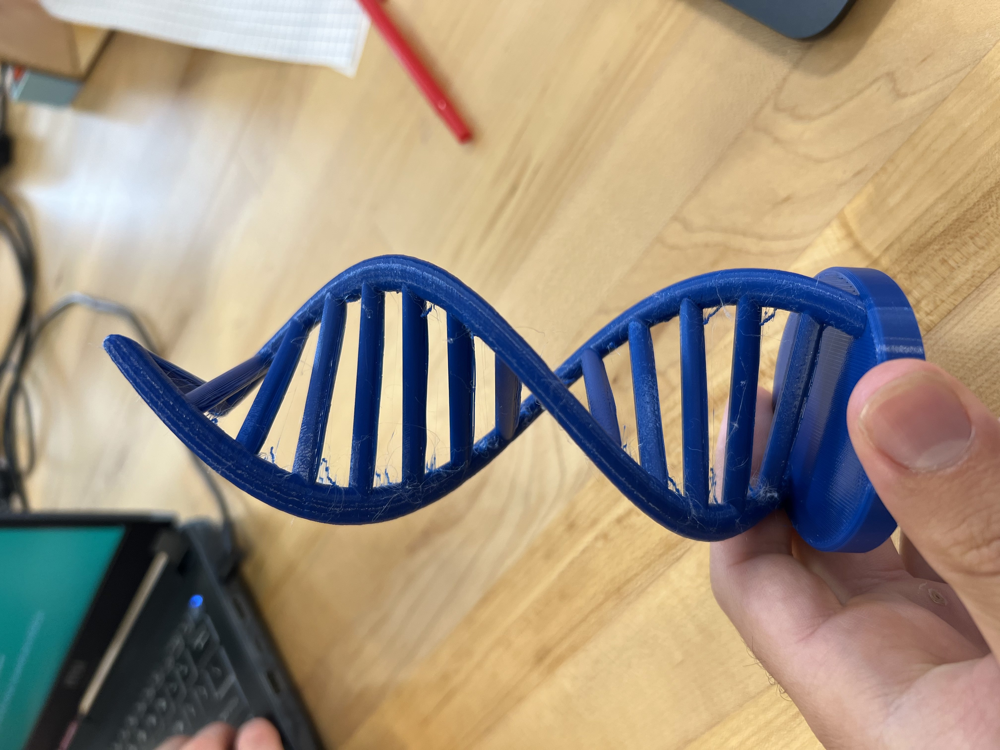

The process was relatively simple. I downloaded the 3mf file, and loaded it into the slicing software. From there, I edited the template to have my name on the name tag. I ran into trouble in doing this step, as I believe the macbook font library did not include the default font that was on the template. Once I changed the font, I was able to type my name, reposition my name so it was centered with the nametag, and finally slice the model. Once sliced, I exported it as a G-code so it was ready to print! I uploaded the G-code into a USB and plugged it into the Pursa MINI+ and pressed “print”... 20 minutes later- It was done! Overall, the print looks pretty good.. It did develop some little stringy parts on the extruding letters of my name but it's acceptable.

In this project, I tested the limits of our printers by printing a double helix!
For my stress test, I went with the double helix print. During my first attempt at printing this model, I made a fatal error: I didn’t use exact placement when positioning the base. Since my Y coordinate was just a hair off (Y=89.8 vs. Y=90), The print was completely off and failed miserably! It also happened during when my professor was lecturing, which he paused in order to call out the failed project to which I admitted was mine. After this failure, I learned of an important tool called “Place on face”. With this tool, you can easily place an object on one of its faces, exactly. This eliminates any human error associated with moving and rotating an object yourself. After placing the helix model flat on its base, I exported it and printed it. This time around, everything went smoothly. The finished product was a success! With exception to a bit of stringiness parallel to the double helix ladders, this printer navigated the complex curves and shapes of the double helix without any support. This is a testament to the Prusa MINI+ and its capabilities. If it can handle a double helix print, it can likely print other complex shapes.
Comparable to the name tag print, it seems like the double helix, being an STL file, lacks the depth of customization that is granted with the 3MF files such as the name tag. With the tag, I was able to change colors, texts, and save printer settings on the 3MF file which it could recall when loaded back onto Prusa Slicer.
For the final step in this assignment, I printed a functional "Joy-Con" grip, as well as a "2 in 1" grip!
This was my favorite project in this assignment, because I got to print functional items I will (hopefully) use quite often! I took a risk for this project by printing multiple models on one bed. This meant that if one of the models failed, the entire bed of models would be trash! Alas, my risk yielded an impressive return, and all of the models came out as expected, with very minor defects. The bottoms of the spherical grip legs are rough, but I see this as a positive; the grips will be extra grippy! Beyond the controllers, I decided to add a one handed joy con attachment that allows you to use both joy cons in a single hand. I was curious to see how functional this would be, so I printed it. The only thing I would change is how the supports came out on the controllers. The spot where the trigger will go was crowded in support filament that was very difficult to remove- I spent several minutes with proper tools until it was finally cleared out. Regardless, I am excited to try out these controller adapters and enhance my gaming experience without purchasing expensive alternatives!